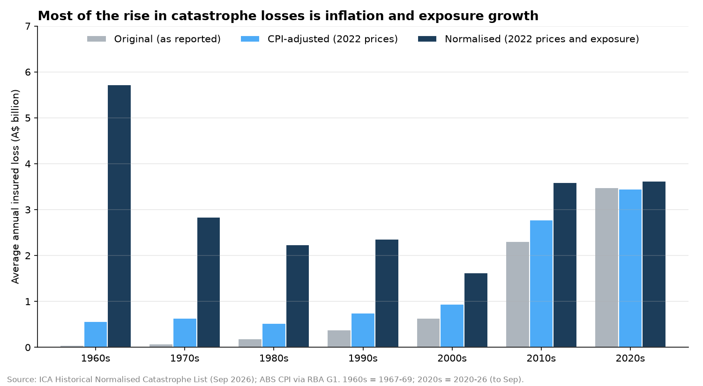

Australian Natural Catastrophe Insurance Loss Analysis
Are natural catastrophes getting more expensive, or are there just more insured homes in harm's way?
- Reported losses rose about 50-fold since the 1970s, but only 27% once adjusted for prices and exposure growth.
- Hail is the costliest peril: one in three major hailstorms caused over $1bn in losses.
- The choice of tail model moves the return period of a $5bn event from 1-in-4 to 1-in-24 years; a truncated lognormal fits the record best.
743 events from 1967 to 2026. Built with Python, SQLite, statsmodels and SciPy, using Poisson regression and maximum likelihood.
